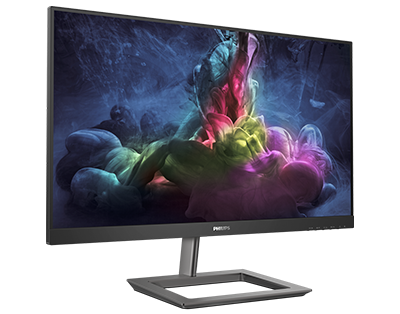
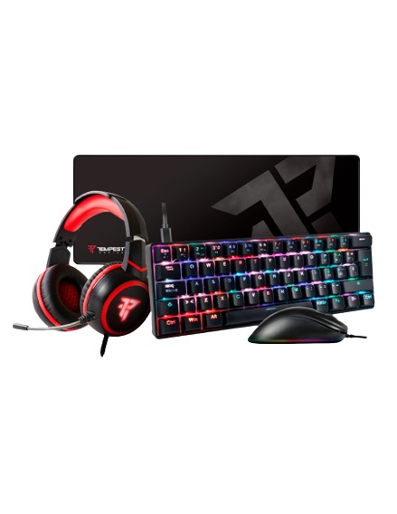
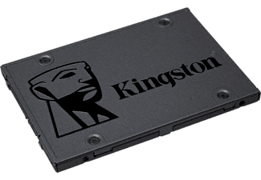

Memoria: 8 GB
Consumo: 215 W
Fuente recomendada: 650 W
HDMI: 2.0b
DisplayPort: 3 puertos 1.4
Comprar ya

LED FullHD
75Hz
FreeSync
Tiempo de respuesta: 1 ms
Comprar ya

Auriculares 5.1 Tempest
Ratón Tempest
Alfombrilla negra XXL
Teclado de mebrana Gaming Tempest
Comprar ya

Arranques, cargas y transferencias de archivos todos con mayor rapidez
Más fiable y duradera que las unidades de disco duro
Varias capacidades, para almacenar las aplicaciones o sustituir del todo unidades de disco duro.
Comprar ya